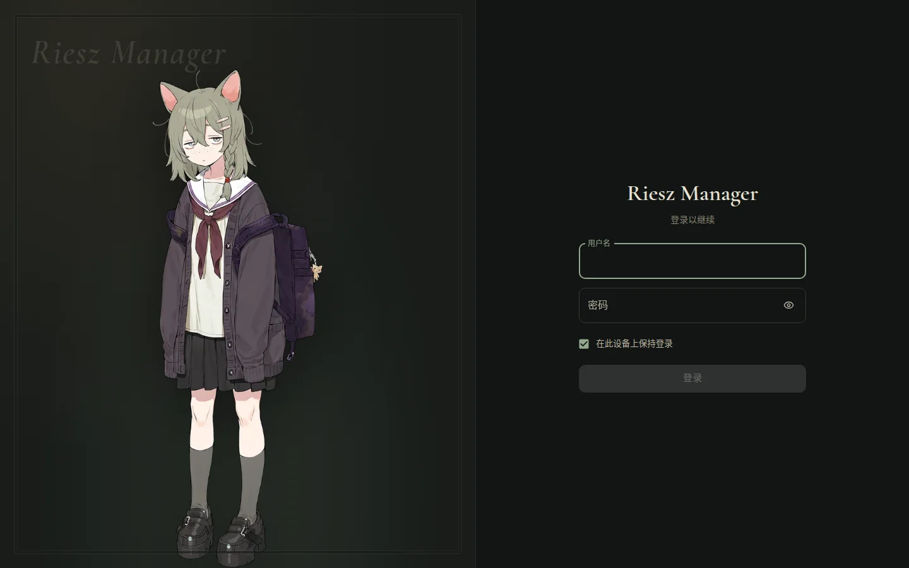
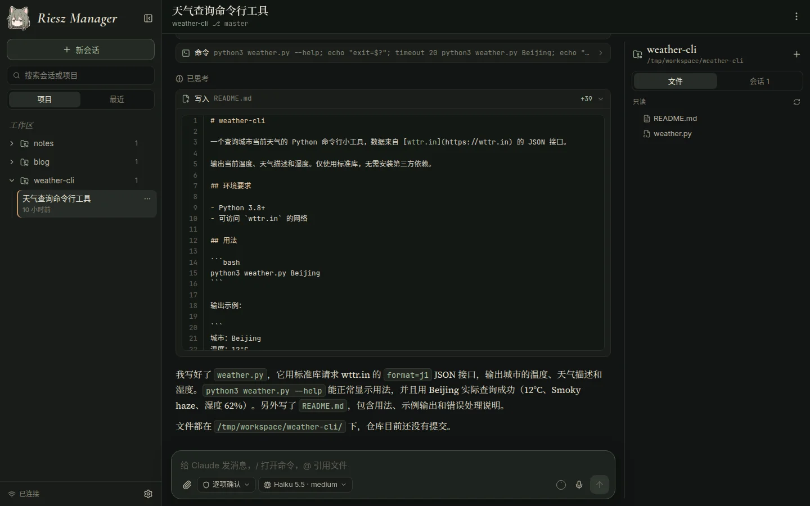

Quickstart
This guide walks you through getting RieszManager running on a Linux machine, opening the web UI locally (or over SSH port forwarding), and starting your first conversation. To access it from your phone or over the internet, or to set up HTTPS, see the Deployment Guide.
Prerequisites
Before you begin, make sure the machine where you are installing RieszManager meets these requirements:
- Operating system: Linux with systemd.
- Claude Code: Installed and logged in, so that running
claudeas the current user starts a conversation normally. - Python: 3.10 or newer.
- Docker: Docker Engine and Docker Compose v2 installed, and the current user can run
dockercommands directly (log out and back in after adding your user to thedockergroup).
You can run these commands in a terminal to check your environment:
claude --version
python3 --version
docker compose versionThe runner and the backend container in the following steps must run as the same Linux user (with matching UID and GID). Run all commands as the user you normally use for Claude Code.
Get the Code and Initialize
-
Clone the repository and enter the directory:
git clone https://github.com/RieszProjects/RieszManager.git RieszManager cd RieszManager -
Run the initialization script:
./rieszctl initThis creates a
.envfile (mode600) from.env.exampleand automatically configures the following:- Generates random values for
RIESZ_SECRET_KEYandRUNNER_TOKEN. - Fills in the current user's
RIESZ_UIDandRIESZ_GID, along withRUNNER_SOCKET_DIR(defaults to~/.local/state/riesz-manager/run). - Sets
WORKSPACE_ROOTto the current user's home directory. To specify a different directory during initialization, runWORKSPACE_ROOT=/path ./rieszctl init. - Generates a random temporary password and prints it to the terminal (as
Generated a temporary password: …). Note this password down; you will need it to sign in to the web UI. The default username isadmin(set byRIESZ_USERNAMEin.env).
- Generates random values for
Edit the Configuration
Open the newly generated .env file in an editor and check these two settings in particular:
WORKSPACE_ROOT: The root directory of your workspace; must be an absolute path. Every top-level folder inside it is recognized as a project in RieszManager. For example, if you setWORKSPACE_ROOTto/home/alice/work, then~/work/blogand~/work/weather-cliappear as two separate projects.RIESZ_PUBLIC_ORIGIN: The external URL of the gateway. While trying it out locally, change this tohttp://127.0.0.1:18573(the default is a placeholder domain, and login will fail if you leave it unchanged). Once you set up a domain and HTTPS later, change it tohttps://your-domain(see Configuring HTTPS).
RIESZ_PUBLIC_ORIGIN must match the exact URL you type into the browser's address bar (including scheme, domain or IP, and port), or login will fail.
By default, the gateway listens on 127.0.0.1:18573 (controlled by RIESZ_BIND and RIESZ_PORT in .env). You don't need to change this while trying it out locally.
Start the Services
-
Install and start the runner service:
./rieszctl runner installThis creates a Python virtual environment under
runner/.venv, installs its dependencies, writes the systemd user serviceriesz-runner, and starts it. The script also tries to runloginctl enable-lingerso the service keeps running after you close your SSH session or reboot the machine. If your user doesn't have permission for that step, the terminal will print instructions on how to run it once manually withsudo. -
Build and start the Docker containers:
./rieszctl upThis builds and starts three containers:
backend,frontend, andgateway. The first run downloads base images and builds the frontend, which takes a few minutes. -
Check the status:
./rieszctl statusThis checks the runner socket file, the status of each container, and the gateway health endpoint at
http://127.0.0.1:18573/api/healthz.
Open the Web UI and Sign In
If you are working directly on the Linux machine's desktop, open your browser and go to http://127.0.0.1:18573.
If RieszManager is installed on a remote machine (such as a cloud server), run the following command in a terminal on your own computer to set up local SSH port forwarding, and keep the connection open:
ssh -L 18573:127.0.0.1:18573 user@server-addressThen open a browser on your own computer and go to http://127.0.0.1:18573.

On the login page, enter your “Username” (用户名) (admin by default, or whatever you set in .env) and “Password” (密码) (the temporary password printed by ./rieszctl init). You can also check “Stay signed in on this device” (在此设备上保持登录).
Your First Session
After signing in, the “Projects” (项目) tab in the left sidebar lists all project folders in your workspace.
- Click any project name to open its page.
- Type your first message in the composer at the bottom of the page and press Enter to send. Note that the session is only created once you send your first message.
- After you send the message, Claude starts working, and the status line at the bottom shows its current progress. When Claude needs to run a terminal command or edit a file, a confirmation card appears at the bottom of the conversation. Click “Allow” (允许) to let it proceed; see Confirmations and Questions for details.
- Open the “Files” (文件) tab in the project panel on the right to see the files in the project directory. Click any file name to preview its contents; see Project Files for details.

Sessions created in RieszManager are saved in the machine's ~/.claude directory just like CLI sessions. You can return to the terminal at any time and run claude --resume <session-id> to continue working in the same session.
Next Steps
Once you've confirmed the basics are working, you can tailor the setup to your needs:
- Replace the temporary password: Run
./rieszctl hash-passwordin the terminal to generate aRIESZ_PASSWORD_HASH, put it into.env, remove the plain-textRIESZ_PASSWORD, and run./rieszctl restartto apply. You can also enable two-factor authentication in the web UI; see Account and Two-Factor Authentication. - Set up HTTPS for mobile or remote access: By default, the gateway only listens on the loopback address. To access it from your phone while away from your desk, set up a reverse proxy and an HTTPS certificate; see Configuring HTTPS.
- Add the web app to your phone's home screen: Once HTTPS is set up, you can add RieszManager to your phone's home screen and use it full-screen like a native app; see Using on Mobile.
- Enable push notifications: Have Claude send notifications to your phone when it finishes a task or stops to wait for your confirmation; see Push Notifications.
- Explore all features: Read the full User Guide to learn about permission modes, terminal sessions, file previews, push notifications, the Lisi doll, and more.